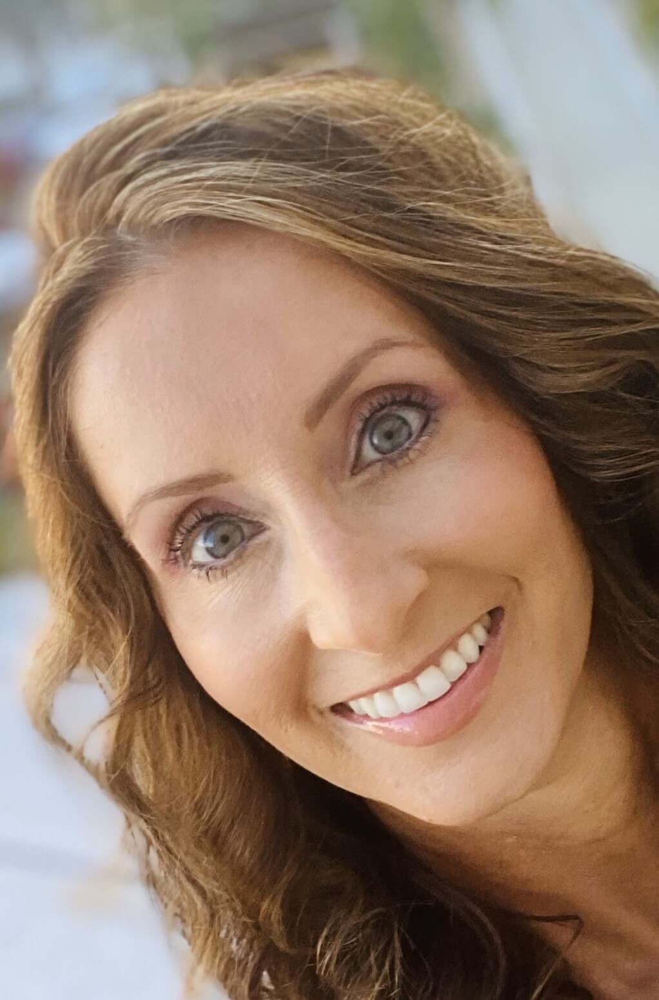
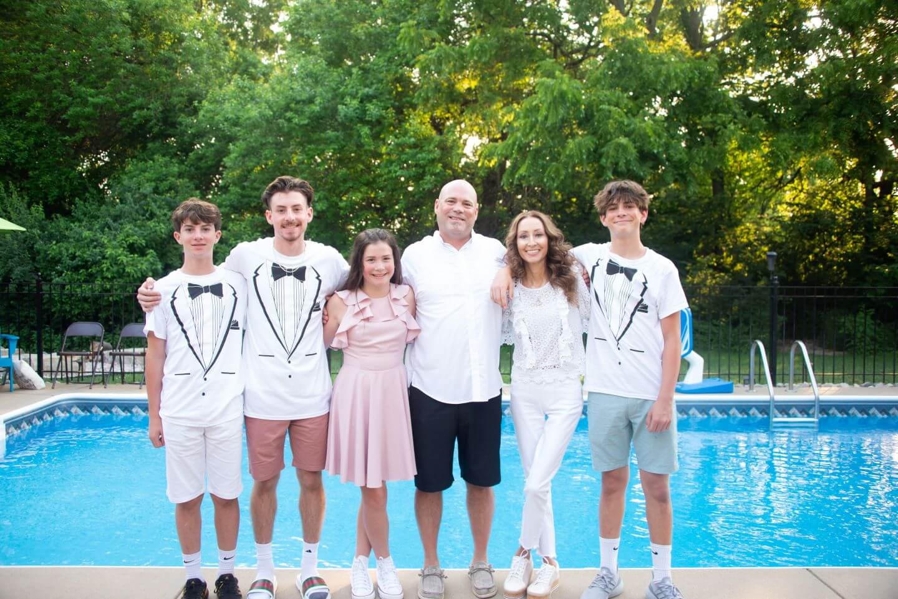

Susanna’s story
Susanna's smile lit up every room she walked into. Infinity - Susanna Smiles was built to make sure that her light continues to reach the families who need it most.

Connections that last for Infinity
Throughout her battle with cancer, Susanna was determined that her husband and children maintain as normal a life as possible. That desire is the heartbeat of everything Infinity - Susanna Smiles does today.
Susanna was strong, loving, and beautiful inside and out. A friend to many, she always made time for friends and family, and she exercised regularly to stay fit and healthy. She married her high school sweetheart, Brooks, and together they had four kids: Preston, Landon, Braydon, and Brooklyn, ages 17 to 10 at the time of her diagnosis.

For over a year, Susanna lived with back pain that kept getting worse. She was advised to keep exercising and try conservative care such as chiropractors and massages. Then she began having trouble breathing and learned that fluid was building up in her lungs. In late 2020, at age 44, she was diagnosed with stage 4 kidney cancer that had already spread to her lungs and spine. She was told she had less than a year to live. Her world was turned upside down, but she was determined to fight and beat it.
Her cancer treatment medications wreaked havoc on her body, so she turned to alternative treatments, all paid out of pocket: infusions, weekly vitamin IV injections, Rife Frequency treatments, and daily TKM Therapy home visits. Some required equipment costing over $30,000. She even considered traveling to other states or countries to see cancer specialists about experimental treatments, but the costs were prohibitive. The treatments gave her hope, and they took a heavy toll on the family’s daily budget.
A Catholic education for all her children was very important to Susanna, and she worked two jobs to help pay for it. As her pain grew and her strength faded, she could no longer work full time and lost her promoted position. She kept working part time because she carried her health insurance policy, even when she could barely sit at her laptop for more than a few minutes. Like most families, Susanna and Brooks could not cover the added medical costs on less income while still paying the mortgage and private school tuition for four children.
Community was the thing that carried Susanna through her hardest days. It is the thing that carries every family we serve through theirs.
Susanna was loved and respected by many, and her family, friends, community, and church family surrounded her with support, both spiritual and financial, through meal trains and more. Family and friends gathered every week to pray for her. Brooks took significant time off work to be at doctors’ appointments, hospital stays, and surgical procedures. Her parents had already passed away, so her seven siblings stood by her side, ready to help with anything she needed.

She leaned most on her four sisters, who sat with her during her alternative treatments and helped her kids with whatever they needed.
In August 2021, just nine months after her diagnosis, Susanna passed away after a brave fight.
The name “Infinity” was chosen by Susanna herself, representing her belief that her love and impact would endure. Every family supported is a continuation of the love and care she brought to every interaction and relationship.
Susanna's generosity, spirit, and smile live on through every family we serve
Our mission is to support families in our community with children facing hardship caused by the critical illness or loss of a parent, in honor of Susanna May.
Our purpose is not just to provide financial assistance to families but to ensure that every individual and family we touch can move towards a more fulfilled and prosperous life, feeling whole and supported in their journey.
Learn MoreOur support is not one-size-fits-all
We work with each family to understand where the need is greatest and direct resources accordingly.
Apply for Financial Support